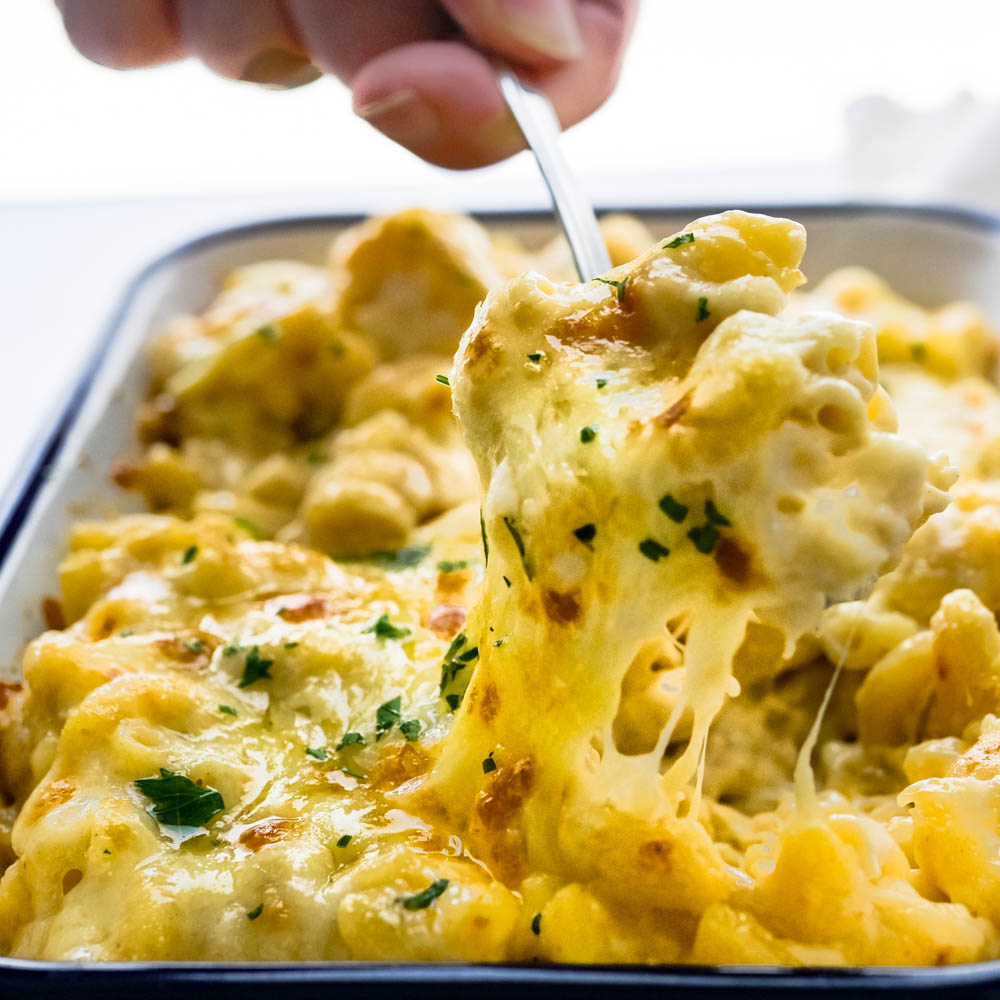

Mac and Cheese Recipe

Mac N Cheese like a pro
When I say ultimate mac and cheese, I’m not joking. In fact, “ultimate” might be an understatement. This 3 cheese mac and cheese is insanely creamy and cheesy, but not in an artificial, Velveeta way. This macaroni gratin has depth and a little tingle. Who doesn’t like a little tingle? And this old fashioned mac and cheese isn’t for people who hem and haw about calories, fat or a “proper serving size” (Mom, I’m talking to YOU).
Ingredients
- Macaroni
- Kosher Salt
- Olive Oil
- White Cheddar Cheese
- Jarlsberg Cheese
- Parmegiano Reggiano
- Regular Whipping Cream
- Dry Mustard
- Cayenne Pepper
- White Pepper
- Garlic Confit (optional, but good)
- Parsley (To make it look healthier than it is)
Steps
- Read the package directions on the pasta to determine how long it needs to cook for al dente — then
SUBTRACT 2 minutes. That’s how long you’ll boil the macaroni. When it’s done, drain it, toss with a
little olive oil and spread the noodles in an even layer on a shallow pan to cool.